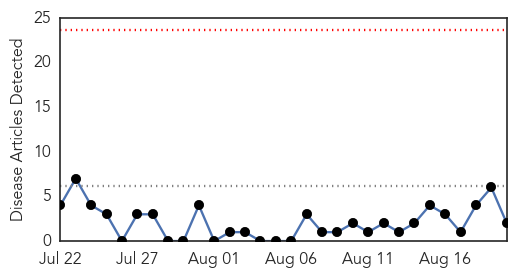
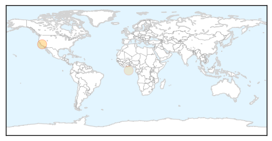

Measles
30-Day Web Trend
0 alerts, 0 warnings

30-Day Twitter Trend
0 alerts, 0 warnings
Article Locations
Article Confidences

Top Articles:
Top Tweets:
-
No tweets found for Aug 20, 2014
Chikungunya
30-Day Web Trend
0 alerts, 0 warnings

30-Day Twitter Trend
0 alerts, 0 warnings

Article Locations

Article Confidences

Top Articles:
- 0.999
- Three new suspected cases of chikungunya
- 0.997
- Latin America Has No Antibodies to Fight Chikungunya Fever
- 0.997
- DARPA Announces Challenge to Curb Spread of Infectious Diseases
- 0.958
- Chikungunya vaccine shows promise
- 0.928
- Seven additional cases of Chikungunya confirmed in Jamaica
- 0.749
- Igbaras village put under ‘state of calamity’
- 0.613
- Health officials warn of dangerous bacteria in Gulf
- 0.523
- Pacific Community Launches a new Web-based Map of Epidemic Alerts
Top Tweets:
-
No tweets found for Aug 20, 2014